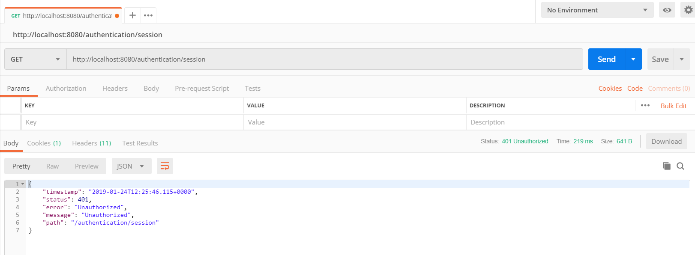
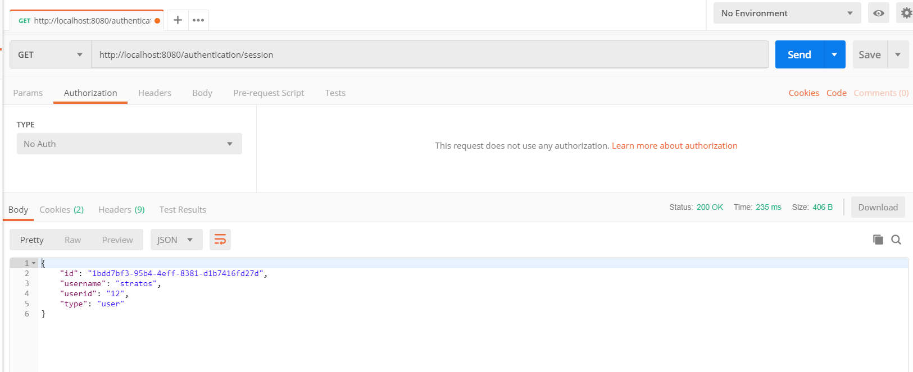
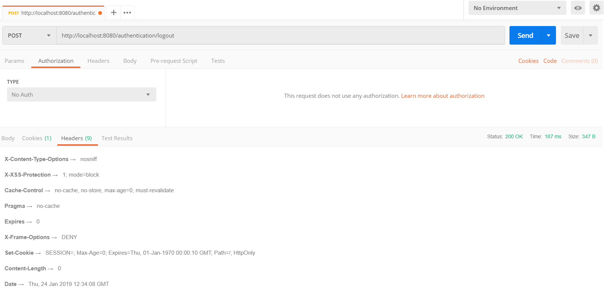
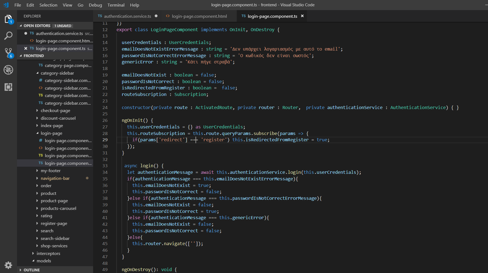
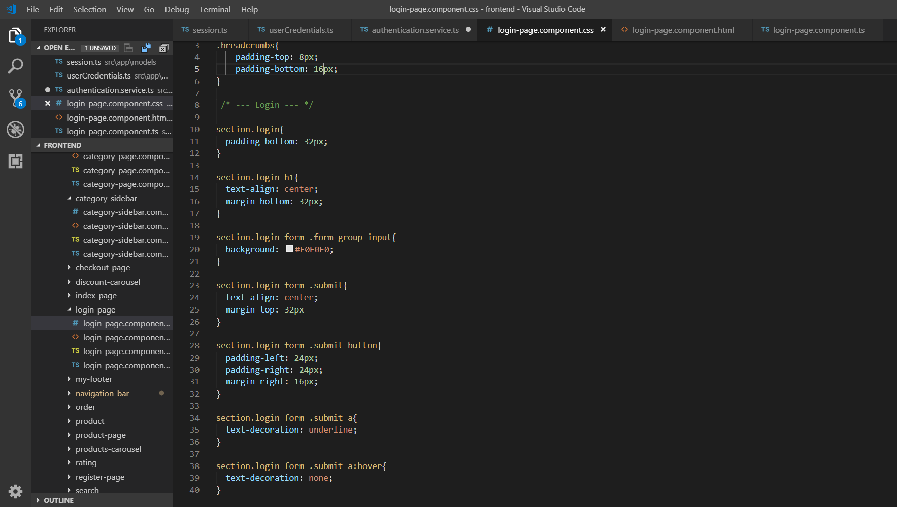
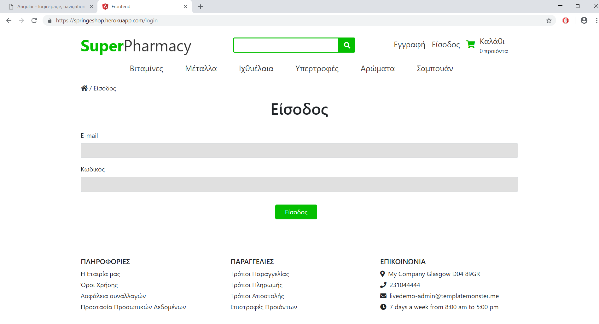
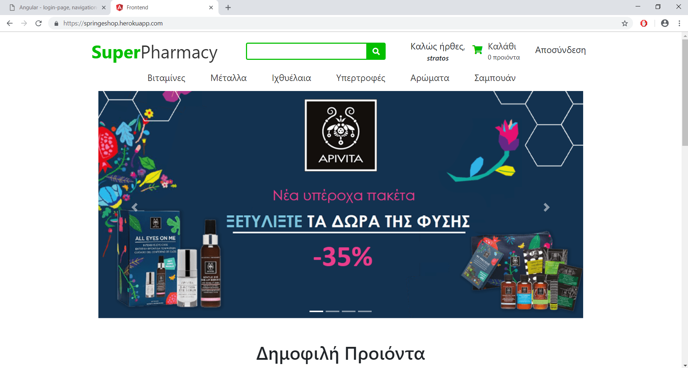
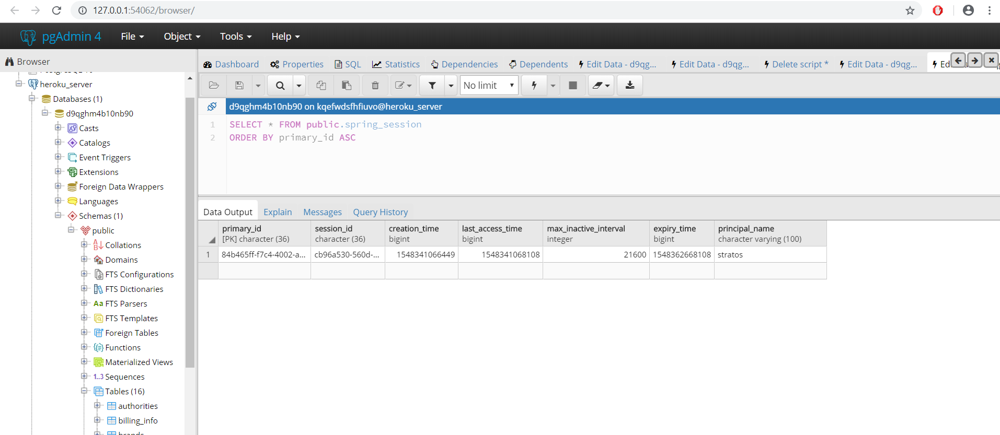

Angular - login-page, navigation-bar components (είσοδος και αποσύνδεση)
Θα δημιουργήσουμε το Angular - login-page component, στο οποίο ο χρήστης θα κάνει login στο λογαριασμό του, αφού συμπληρώσει το email και τον κωδικό του. Επίσης, θα τροποιήσουμε το navigation-bar component, ώστε να αποσυνδέεται.
HTTP Basic Authentication
Έχουμε ενεργοποιήσει το HTTP Basic Authentication. Αυτό σημαίνει ότι στα URLS, όπου ορίσαμε ότι ο χρήστης, πρέπει να είναι αυθεντικοποιημένος, πρέπει να παρέχει ένα username και ένα κωδικό σε κάθε αίτημα. Κάθε αίτημα περιέχει ένα header Authorization: Basic <credentials<, όπου το credentials είναι η base64 κωδικοποίηση του id και του κωδικού, ενωμένα με μια τελεία.
Cookies, HTTP Session
Ένα cookie είναι μια μικρή συλλογή πληροφορίας, το οποίο στέλνεται κάθε φορά από τον browser του client. O Server ανακτά το cookie από κάθε αίτημα του client, ώστε να μπορεί να ξεχωρίζει τα αιτήματα από τον ίδιο client.
Όταν ο client κάνει το πρώτο αίτημα του στο Server, το servlet container δημιουργεί ένα HttpSession, με την εντολή HttpSession session = request.getSession(), δημιουργεί ένα μοναδικό ID και το αποθηκεύει στη μνήμη του server. Στο header Set-Cookie της HTTP απάντησης του, ο server δημιουργεί ένα cookie με όνομα SESSIOΝ και του δίνει την τιμή του μοναδικού ID. Ο client αντίστοιχα στέλνει το cookie στα επόμενα αιτήματα του, ώστε να μπορεί να τον αναγνωρίσει ο server και να πάρει το αντίστοιχο HttpSession από την μνήμη.
Login
Για να κάνει login ο χρήστης, η Angular εφαρμογή θα κάνει ένα HTTP Post στο endpoint /authentication/validateuser, στέλνοντας τα username και τον κωδικό του χρήστη. Αν είναι σωστά, τότε θα κάνει ένα HTTP GET στο /authentication/session, βάζοντας τα στοιχεία στο Authorization: Basic <credentials>, να πάρει το Session cookie και να μην τα ξαναστέλνει σε κάθε αίτημα.
Spring Boot
Δημιουργούμε τις κλάσεις UserCredentials και Session στο springeshop.model
public class UserCredentials{
private String email;
private String password;
public UserCredentials() {}
//Getters - Setters ...
}
public class Session{
private String id;
private String username;
private String userid;
private String type;
public Session() {}
//Getters - Setters ...
}
Δημιουργούμε τoν AuthenticationController στο πακέτο springeshop.controller
package springeshop.controller;
@RestController
public class AuthenticationController{
@Autowired
private UserService userService;
@Autowired
private BCryptPasswordEncoder passwordEncoder;
...
Προσθέτουμε τη μέθοδο login στον AuthenticationController.
- Ψάχνουμε τον πίκακα users και εάν δεν υπάρχει χρήστης με αυτό το email, επιστρέφουμε μήνυμα "Δεν υπάρχει λογαριασμός με αυτό το email" και status 404 NOT_FOUND
- Βρίσκουμε τον κωδικό του χρήστη και εάν δεν ταιριάζουν, επιστρέφουμε μήνυμα "Ο κωδικός δεν είναι σωστός" και status 400 BAD_REQUEST.
- Εάν τα στοιχεία είναι σώστα, επιστρέφουμε status 200 OK.
@RequestMapping(value = "/authentication/validateuser", method = RequestMethod.POST)
public ResponseEntity<?> login(@RequestBody() UserCredentials userCredentials{
if(!userService.doesEmailExist(userCredentials.getEmail())){
return new ResponseEntity<>(new ErrorMessage("Δεν υπάρχει λογαριασμός με αυτό το email" , HttpStatus.NOT_FOUND);
}
User user = userService.findByEmail(userCredentials.getEmail());
boolean doPasswordsMatch = passwordEncoder.matches(userCredentials.getPassword(), user.getPassword());
if(!doPasswordsMatch){
return new ResponseEntity<>(new ErrorMessage("Ο κωδικός δεν είναι σωστός" ,HttpStatus.BAD_REQUEST);
}
return new ResponseEntity<>(user, HttpStatus.OK);
}
Προσθέτουμε τη μέθοδο getSession στον AuthenticationController.
Επιστρέφουμε εκτός από το session cookie, και ένα αντικείμενο Session, το οποίο περιέχει στοιχεία του session.
@RequestMapping(value = "/authentication/session", method = RequestMethod.GET)
public ResponseEntity<?> getSession(Principal principal, HttpSession session){
User user = userService.findByUsername(principal.getName());
Session userSession = new Session();
userSession.setId(session.getId());
userSession.setUsername(principal.getName());
String userId= user != null ? Integer.toString(user.getId()) : "";
userSession.setUserid(userId);
String type = principal == null ? "anonymous" : "user";
userSession.setType(type);
return new ResponseEntity<>(userSession, HttpStatus.OK);
}
Προσθέτουμε τη μέθοδο logout, για να αποσυνδέεται ο χρήστης.
Κάνουμε invalidate το session και επιστρέφουμε status 200 OK.
@RequestMapping(value = "/authentication/logout", method = RequestMethod.POST)
public ResponseEntity<?> getSession(HttpSession session){
session.invalidate();
return new ResponseEntity<>(HttpStatus.OK);
}
Προσθέτουμε τη μέθοδο getSessionAnonymous
Επιστρέφουμε τα στοιχεία του session ενός ανώνυμου χρήστη
@RequestMapping(value = "/anonymous/session", method = RequestMethod.GET)
public ResponseEntity<?> getSessionAnonymous(Principal principal, HttpSession session){
boolean isAnonymous = principal == null ? true : false;
if(isAnonymous){
Session userSession = new Session();
userSession.setId(session.getId());
userSession.setUsername(""));
userSession.setUserid("");
userSession.setType("anonymous");
return new ResponseEntity<>(userSession, HttpStatus.OK);
}
return new ResponseEntity<>(HttpStatus.BAD_REQUEST);
}
Postman
Πραγματοποιούμε GET στο http://localhost:8080/authentication/session και μας επιστρέφει 401 Unauthorized
Πραγματοποιούμε το ίδιο ερώτημα με το Authorization Header και μας επιστρέφει 200 ΟΚ.


Πραγματοποιούμε το ίδιο ερώτημα με το session cookie και χωρίς το Authorization Header και μας επιστρέφει 200 ΟΚ.
Πραγματοποιούμε logout στο http://localhost:8080/authentication/logout, διαγράφει το session Cookie και μας επιστρέφει 200 ΟΚ.
Login
Δημιουργούμε το component login-page και το service authentication.
ng generate component login-page
ng generate service authentication
Δημιουργούμε ένα μοντέλο Session, σύμφωνα με το αντίστοιχο entity

authentication.service.ts

Κάθε φορά που ο χρήστης πατάει το κουμπί Είσοδος, η μέθοδος login() του authentication service, κάνει το HTTP αίτημα και επιστρέφει το ανάλογα μήνυμα. Αν τα στοιχεία του χρήστη είναι σωστά, τον πηγαίνει στο IndexPageComponent.
login-page.component.ts
login-page.component.html

login-page.component.css
Εμφάνιση σελίδας
Logout
Αφού κάνουμε login, η εμφάνιση της κεντρικής σελίδας είναι η εξής:
Ο πίνακας spring_session έχει μια εγγραφή
Για να κάνουμε logout, πατάμε στο κουμπί Αποσύνδεση. Καλείται η μέθοδος logout του NavigationBarComponent, η οποία με τη σειρά της καλεί τη μέθοδο logout() του AuthenticationService.
navigation-bar.component.ts

authentication.service.ts